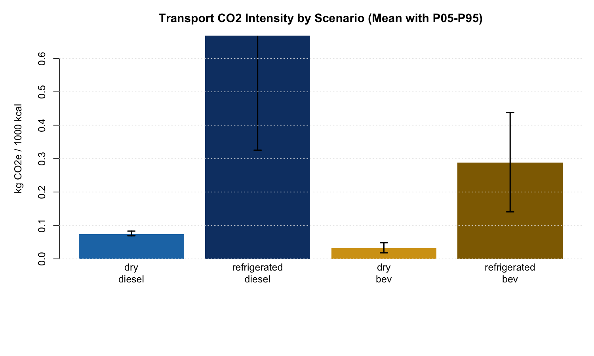
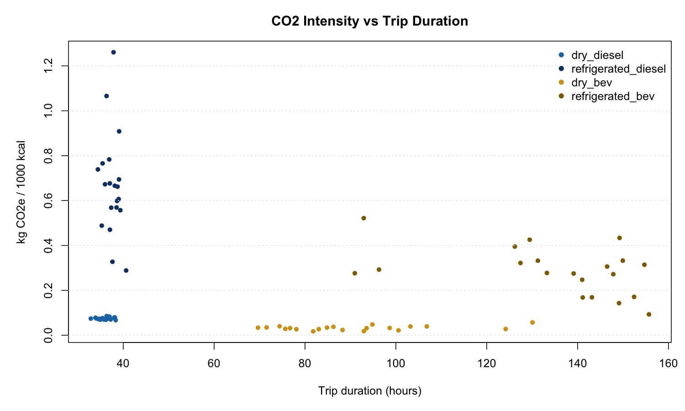

| Scenario | Mean | Median | P05 | P95 | N |
|---|---|---|---|---|---|
| dry_bev | 0.0325 | 0.0321 | 0.0181 | 0.0482 | 20 |
| dry_diesel | 0.0743 | 0.0737 | 0.0691 | 0.0831 | 20 |
| refrigerated_bev | 0.2883 | 0.2849 | 0.1406 | 0.4379 | 20 |
| refrigerated_diesel | 0.6684 | 0.6639 | 0.3254 | 1.0755 | 20 |
Transport Monte Carlo Results
This page publishes the latest distribution-stage transport Monte Carlo outputs and downloadable assets.
Case
- Latest validated run:
distribution_davis_fu_final(2026-03-09) - Execution mode: low-memory, chunked checkpoints (
N_REPS=20,CHUNK_SIZE=2) - Functional basis:
kg CO2e / 1000 kcal delivered
Latest Results (Distribution LCI)
Updated Figures




Download Data and Animations
Latest run data:
Animation assets (downloadable):
{kind=link}
Trip-Time and Regime Diagnostics


Evolution Animation
Final frame:

Animation files:
{kind=link}
Source Artifacts
Scientific Graphics Package
Distribution comparisons:


Convergence:

Sensitivity:

Geography comparison (paired-origin GSI):